| 日付 | 2019年8月9日（金） - 2019年8月12日（月） | ||||
|---|---|---|---|---|---|
| 山域 | 草津周辺 | ||||
| メンバー | 家族（妻、長女・8歳、長男・6歳） | ||||
| 山行形態 | 子連れ3泊4日キャンプ | ||||
| アクセス | 車、リフト、バス | ||||
| ルート (Map1) |
|
今年の盆休みは立山にでも行こうかと考えていたが
息子が病気になったため予定は全て白紙にしていた。
その後、だいぶ回復してきたため、休みの2週間前に予定を立て始める。
もう様々な予約は不可能な時期。
涼しそうな志賀高原のキャンプ場でゆっくりすることにする。
1日目
草津白根を越えて志賀高原を目指す。
草津白根山は6年前に登った懐かしい山だ。
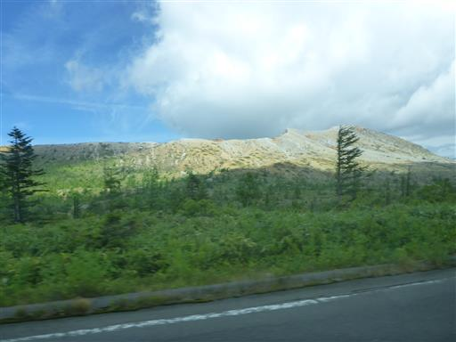
大駐車場とレストハウスは1年半前の噴火以降、閉鎖されたまま。
今でも噴火に備えてバイクや自転車の通行止め、夜間通行止めの措置が取られている。
一つの観光地が失われたのは寂しいが、道が大混雑にならないのはありがたい。
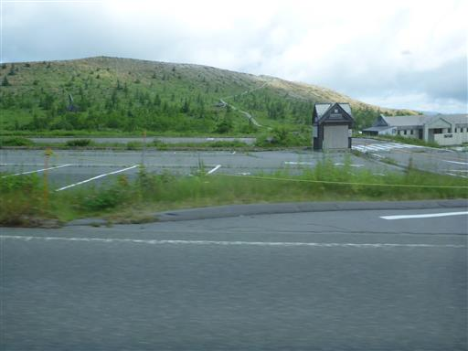
志賀高原に入ったところで、眺めが良いので駐車場に車を停める。
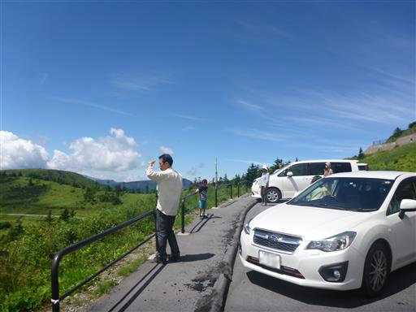
緑の笹と木が美しい。日本屈指の絶景道路だろう。
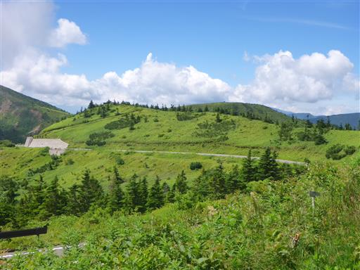
遠く草津白根山が噴煙を上げている。
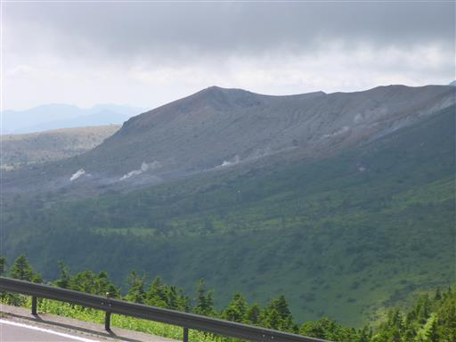
笠ヶ岳が見えてきた。天気が良いので本日は笠ヶ岳に登ることにする。
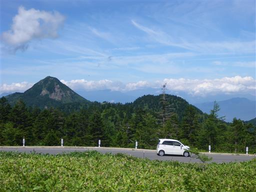
笠ヶ岳登山口に到着。標高1910m。
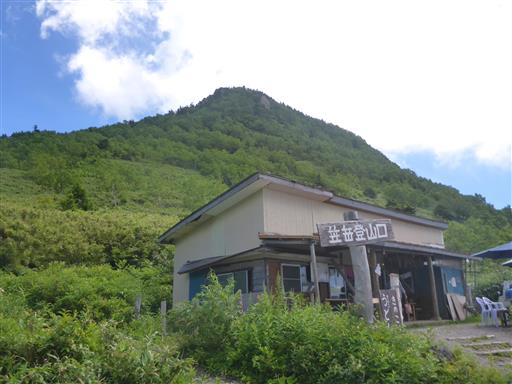
3ヶ月振りの山登り。容易に登れる山なので、様子を見ながらゆっくり登って行く。
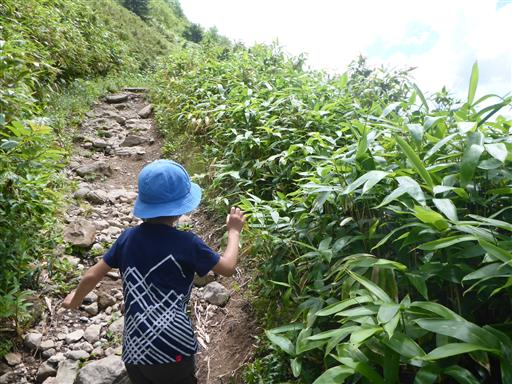
トンボがたくさんいるので、息子はトンボ捕りに夢中になっている。
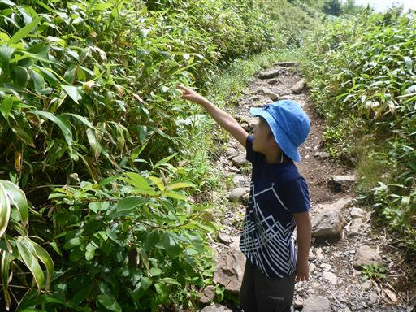
車に乗っていた時はきれいに晴れていたのに、雲が増えてきている。
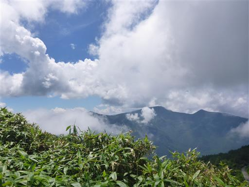
足元にホタルブクロの花がたくさん咲いている。
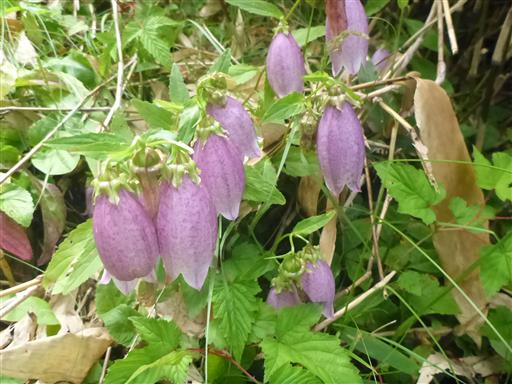
こちらはヤマハハコ。

登り30分、標高差170mの軽い登山だが、それなりに登りが続く。
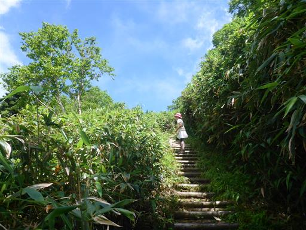
急斜面で段差が大きいため、かなり登りにくい。
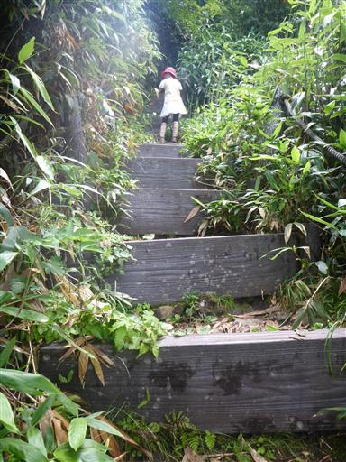
山頂直下は岩場になる。
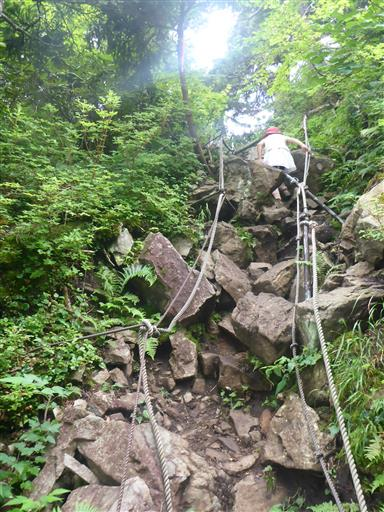
笠ヶ岳山頂に到着する。標高2076m。
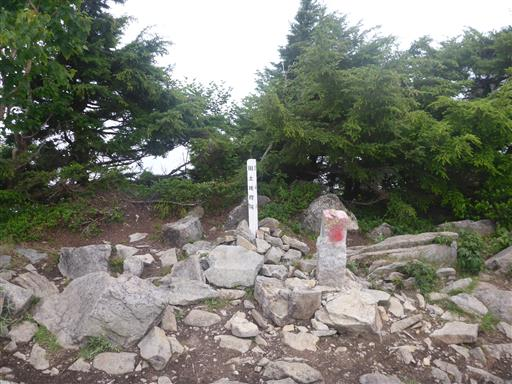
息子は少し疲労気味。
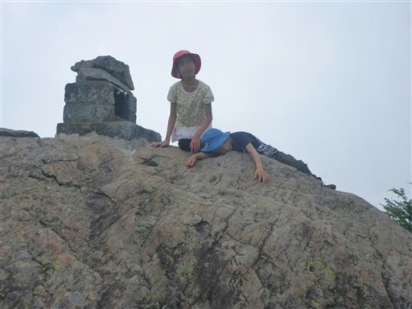
山頂付近はトンボや蝶が飛び交っている。
残念ながら付近は雲に覆われだして、景色がほとんど失われてしまった。
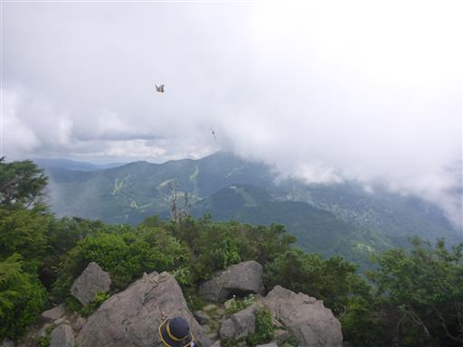
岩がちな山で、眼下に岩が続いている。
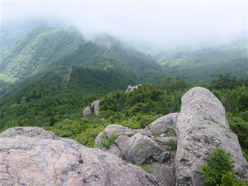
美しい入道雲が出ている。今回の旅行は4日間とも不安定な天候の予報。
キャンプと山には好ましくない天候で、夜の雷雨が心配だ。
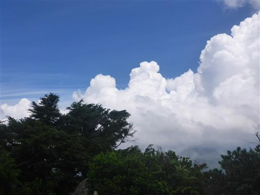
山頂で昼食をとったら下山開始。
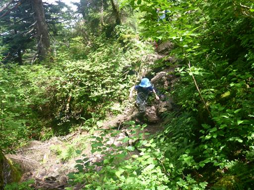
長く続く階段は下りにくく、膝に負担がかかる。
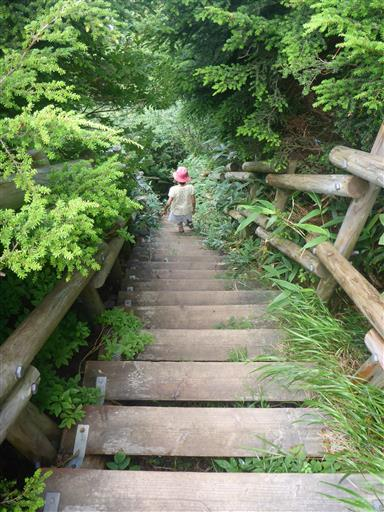
傾斜が緩くなると登山口までもうすぐだ。
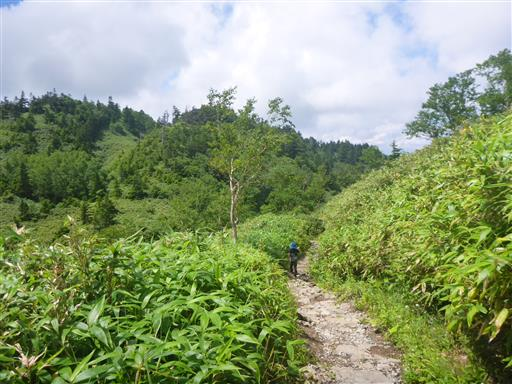
下山後レストハウスに寄ってソフトクリームを食べる。
息子は置いてあったハンドベルを熱心に触っている。
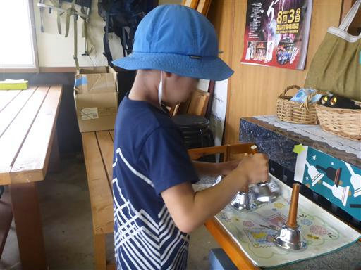
下山後は、笠ヶ岳に車で向かう途中に見つけた噴煙を見学しに行くことにする。
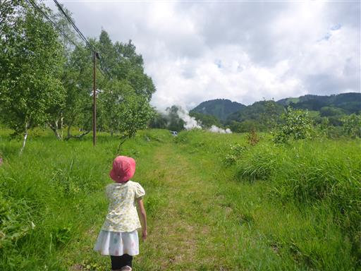
平床大噴泉という名前が付けられているようだ。
また、ここはほたる温泉の源泉になっている。
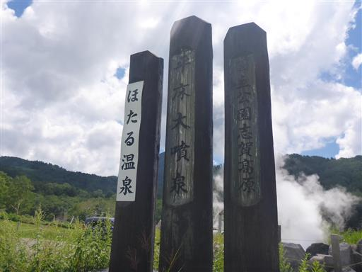
煙がもうもうと出ている。
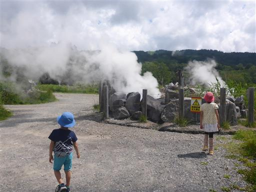
吹き出た湯が流れ出している。触ってみると結構熱い。
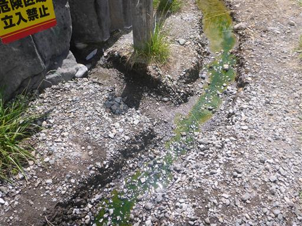
観光を終えたらキャンプ場に向かう。今回停まるのは木戸池キャンプ場。
まずは木戸池温泉ホテルで手続きを行う。
団体の貸し切り予約が入っているため、ホテル内には入れず、外で受付を済ます。
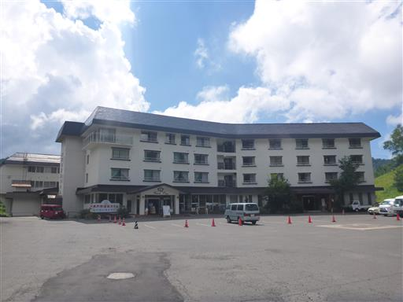
側には木戸池がある。
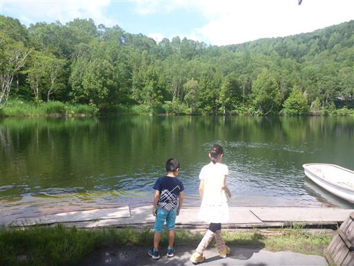
キャンプ場に移動。ここは予約なしのキャンプ場で早い者勝ち。
金曜なのでテントは数張りしかなく、好きな場所に設営できる。
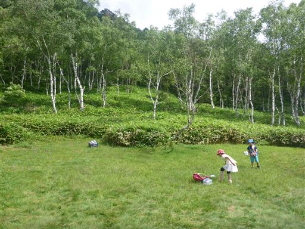
設営しているとアサギマダラが飛んでくる。
大きな羽でフラフラと飛んでいるが、こんな飛び方でよく海を越えられるものだ。
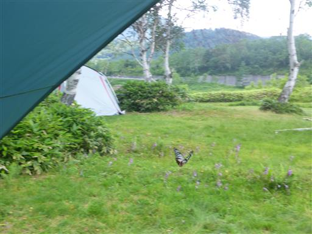
水場。水はかなり冷たい。
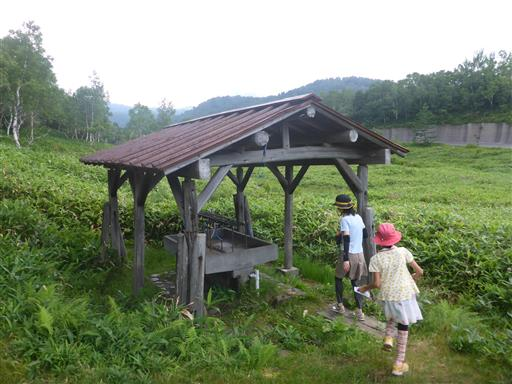
水場の照明は斬新なつくりだ。
しかしスイッチは見当たらず、夜になってもライトがつかない。
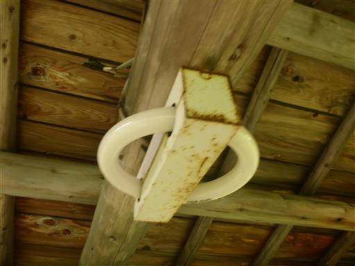
子供達はトランプやUNOで遊んでいる。
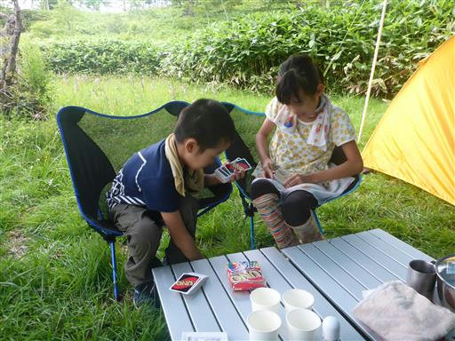
その後は虫取り遊び。ターゲットは無数にいるトンボだ。
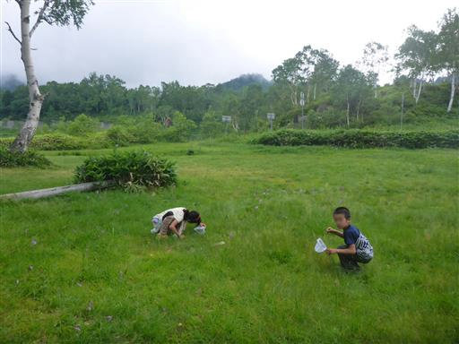
トンボをたくさん捕まえる。全て赤くなる前の赤トンボだ。
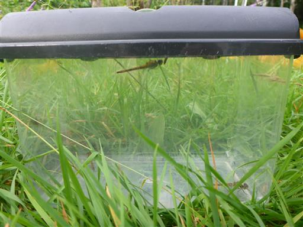
夕日を受けて雲が赤く染まっている。かなり背が高く怖い入道雲だ。
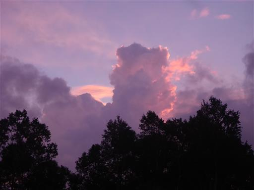
ホテルでもらったパンフレットに、近くでホタルが見られると書かれていたので行ってみる。
車を停めて歩いていると、雷が光ってゴロゴロと音が鳴り出す。
子供達が帰ろうとうるさいので、ホタルを見学せずに引き返すことにする。
その後しばらくして雨が降り出してくる。雷の音も激しくなってくる。
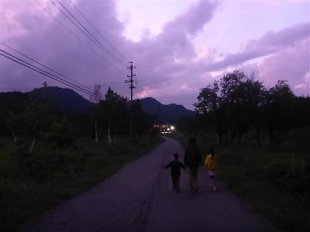
雷がなっている間は危険なため車で待機。
暇なので、湯田中まで下ってコンビニに買い出しに行く。片道30分だ。
最初は雷雨だけだったが、地面から霧が大量に発生してきて、一時視界が閉ざされてしまった。
視界は5m程度で、道路も反対車線のガードレールも何も見えなくなり、かなり怖かった。
ハザードランプを付けながらゆっくり走って何とか抜け出した。
コンビニから帰ると、空ではまだ雷が光っていたが音はしなかったので、
ある程度安全だと判断しテントに戻る。初日から雷雨で、明日以降が思いやられる。
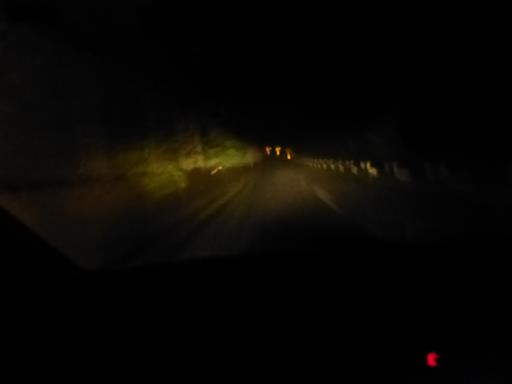